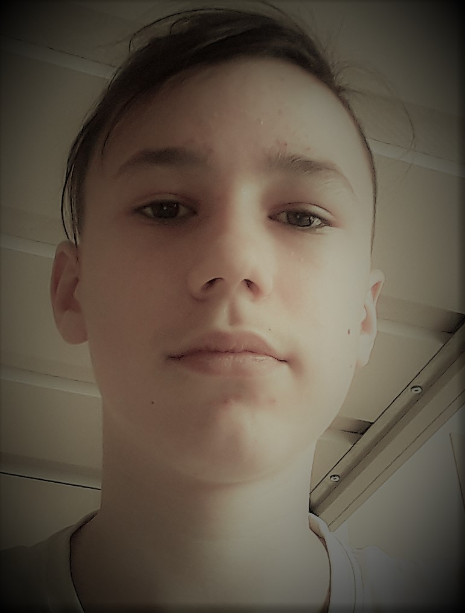

Roberts Trokša
Roberts Trokša(latviešu Roberts Trokša, dzimis 2008.gadā 28.jūnija.) ir Daces deju skolas dejotais. Programmetais- Roberts bija programmetais un uzrakstija 106 html saitus.
|
Roberts Trokša  |
|
| Dzimis | 2008.gadā Latvijā, Jūrmalā |
|---|---|
| Dzives vieta | Latvija, Rīga |
| Darbs | Programmetais, dejotais un matematiķis. |
Biogrāfija
Dzimis 2008.gadā Jurmalā - Latvijā, dzivo Rīgā. Macijas RVKg no 2014.gada līdz 2021.gadā. 2021.gadā nolika eksamenu un tika 1.ģimnāzijā. 2021.gadā ieguva 2.vietu JMK. Dejošana- 2014.gadā sāka dejot, (2014.gadā dejoja ar divam partnerem- Gabriellu un Nastju). 2016.gadā mainija partneri uz Paulu un ar viņu dejoja līdz E4. 2017.gadā mainija savu partneri uz Elīzu Albiņujo Paula bija mazāka auguma nekā viņš. Ar Elīzu viņš 2 meneša laikā izgāja E4 un 2018.gada pargāja uz E6. Elīza bija tapata auguma ka Roberts un viņam bija ērti ar viņu dejot. 2019.gadā pāris mainija klubu no "Dance for jou" uz"Daces Deju skola". 2020.gadā pargāja uz D klasi.